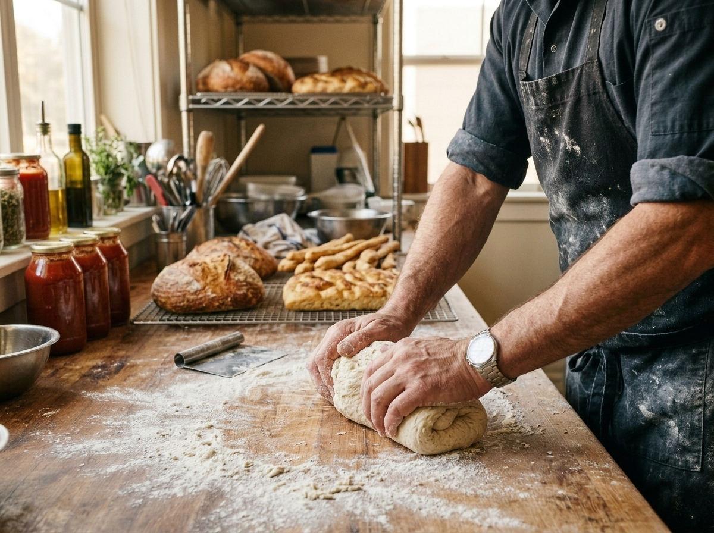
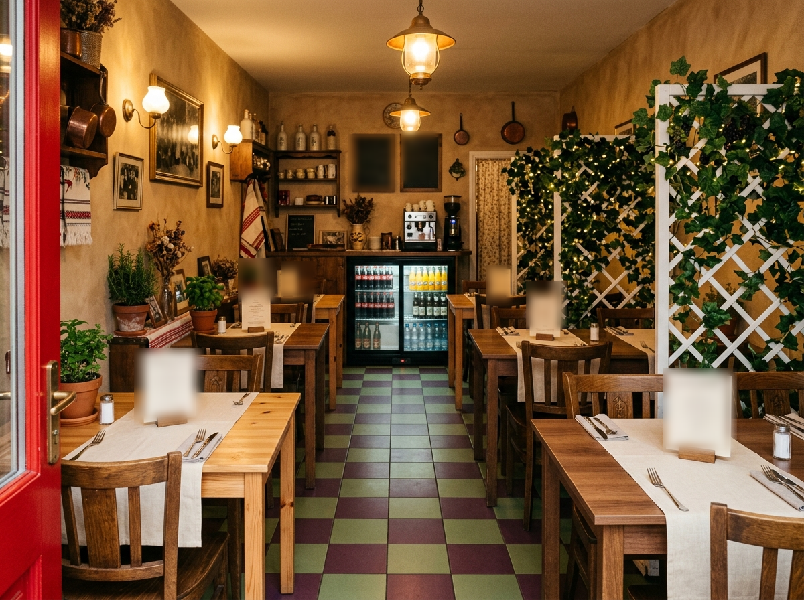

an evening at
Italian Garden · 1330 S Main St, Auburn, Indiana
Two people. Thirty seats. Everything from scratch — for twenty-five years.
They met at Auburn's Greenhurst Country Club — he was the head chef, she managed the office. In July 2001 they opened the doors of a century-old former appliance store on South Main, and they've been the entire crew ever since.
There's no walk-in cooler and no freezer at Sandra D's — on purpose. Ingredients come in fresh, get cooked, and the menu moves with what's good. In 2007 the café went all-Italian, and from that day the bread, the sauces, and the salad dressings have all been made in-house.
It hasn't all been breadsticks. In 2014 a burst pipe upstairs poured seven thousand gallons through the building and closed them for four months. "We thought we were finished," Sandy said — and it was their customers who talked them into coming back.
Since 2018, their monthly "Soup for the Soul" nights have served creative soups for donations — a tradition that had raised more than $34,000 for local charities by 2021, and kept going.

Bentley is head chef at Greenhurst Country Club; Sandy manages the office. They meet, and they buy a century-old building on South Main.
Sandra D's opens — originally 5 a.m. to 10 p.m., breakfast included, until the schedule nearly cooked the chef too.
The menu goes all-Italian. Bread, gravy, and dressings are made from scratch from here on out.
A burst pipe floods the building. Four months dark — then the regulars bring them back.
The first "Soup for the Soul" charity night. Over $34,000 raised for local causes in the years since.
Twenty-five years. Same two people, same thirty seats, same scratch kitchen.

When you are waited on, you're waited on by the owners. We take pride in what we do.— Bentley Dillinger, chef & co-owner
Look for the scalloped red awning and the garden mural by the door. Free customer lot, street parking out front, wheelchair accessible.
| Monday | Closed |
| Tuesday | Closed |
| Wednesday | Closed |
| Thursday | 11 AM – 2 PM |
| Friday | 11 AM – 7 PM |
| Saturday | 11 AM – 7 PM |
| Sunday | 11 AM – 2 PM |
Hours from the restaurant's public listings — a small kitchen's week can shift, so it's worth a peek at their Facebook page before a long drive.
Thirty seats. Come early, or call ahead. Takeout available; credit cards welcome.